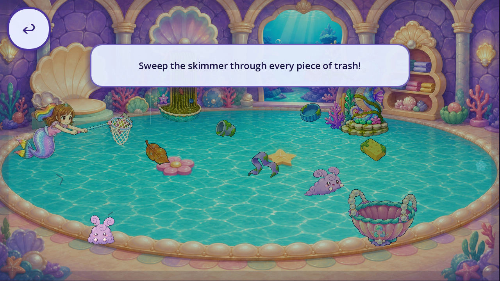
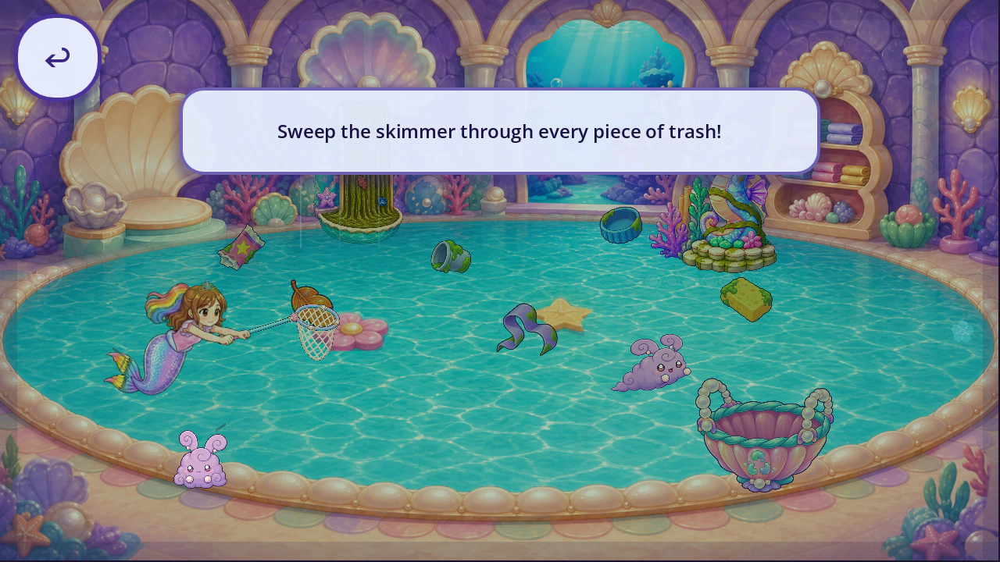

The205px tool produced convincing grips but clipped the tail at wrapper contact. The150px whole-tool retry gives the four inspected static fits a4.6 opinion, with complete-card viewport checks. These are explicit placement fixtures; current played actions and costume scores remain unchanged.
play_a_08_idle_clear.webp · static fit4.6
The unmodified approved closed hands visibly grasp the shaft with the tool behind them. The150px whole-tool fit preserves its matte colours and readable mesh, and the complete Roshan cutout stays inside the viewport at the exact wrapper-contact fixture. The higher idle anchor clears the earlier dust-bunny overlap. This is a static unbound fit; all objects, temporal acting, direction changes, save/interrupt and costumes need their own evidence.
play_a_08_contact_wrapper_fixture.webp · static fit4.6

The unmodified approved closed hands visibly grasp the shaft with the tool behind them. The150px whole-tool fit preserves its matte colours and readable mesh, and the complete Roshan cutout stays inside the viewport at the exact wrapper-contact fixture. The higher idle anchor clears the earlier dust-bunny overlap. This is a static unbound fit; all objects, temporal acting, direction changes, save/interrupt and costumes need their own evidence.
play_a_09_idle_clear.webp · static fit4.6

The unmodified approved closed hands visibly grasp the shaft with the tool behind them. The150px whole-tool fit preserves its matte colours and readable mesh, and the complete Roshan cutout stays inside the viewport at the exact wrapper-contact fixture. The higher idle anchor clears the earlier dust-bunny overlap. This is a static unbound fit; all objects, temporal acting, direction changes, save/interrupt and costumes need their own evidence.
play_a_09_contact_wrapper_fixture.webp · static fit4.6
The unmodified approved closed hands visibly grasp the shaft with the tool behind them. The150px whole-tool fit preserves its matte colours and readable mesh, and the complete Roshan cutout stays inside the viewport at the exact wrapper-contact fixture. The higher idle anchor clears the earlier dust-bunny overlap. This is a static unbound fit; all objects, temporal acting, direction changes, save/interrupt and costumes need their own evidence.